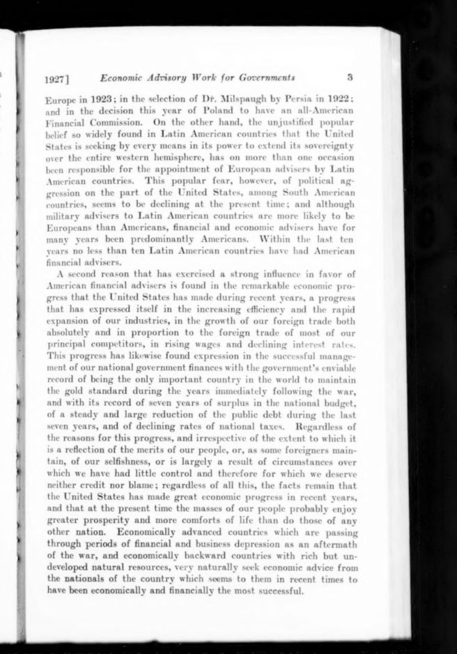

Wissler, 1927: a máquina como trabalho armazenado
Leitura: 5 min
Numa comunicação, Wissler contesta Hayes e Graham: a alta esperada dos salários estimula o uso de máquinas, porque a máquina guarda trabalho pago ao salário de hoje.


Quando os mercados crescem ou encolhem, o executivo de produção precisa decidir se troca operações manuais por máquinas. Willis Wissler, da Ohio State University, abre sua comunicação lembrando que a relação entre salários e uso de máquinas não é um terreno de exercício para dialéticos, mas um problema de primeira importância para os industriais. Nem sempre a escolha está nas mãos do empresário: quem já se comprometeu com máquinas pode ficar preso a elas, e o negócio novo vai para concorrentes com máquinas mais eficientes, máquinas mais baratas ou trabalho manual mais barato.
O que diziam Hayes e Graham?
A discussão vinha de H. G. Hayes, na American Economic Review, retomada por Graham no número de setembro. Ambos sustentavam que a variação dos salários não é fator determinante na escolha entre trabalho manual e máquina. Hayes apoiava-se na hipótese de que uma mudança salarial afeta as duas alternativas ao mesmo tempo e na mesma medida, expressa na equação Ai + b = C, em que A é o trabalho gasto na construção da máquina, i os juros sobre esse investimento, b o trabalho de operar a máquina e C o custo alternativo do trabalho manual.
Qual é a objeção principal?
Wissler diz que essa hipótese basta para refutar o argumento. A equação compara duas coisas que raramente coincidem no tempo: o trabalho incorporado na máquina, pago num momento, e o trabalho manual, pago depois. Um aumento de salário não atinge as duas alternativas no mesmo instante. A máquina é um estoque de trabalho a um nível salarial que, no futuro, pode ser outro.
Na prática industrial, conclui, o empresário vê a máquina como substituto do trabalho manual quando ela lhe dá um custo mais baixo e mais controlável, ou quando espera ganhos com a eliminação de atrasos e manuseio extra, que reduzem juros e outros custos.
E o argumento de Graham?
Graham concorda com Hayes por outras razões, e Wissler aponta nele um uso frouxo dos termos: a confusão entre salário por hora e custo do trabalho por unidade produzida. Se Graham tivesse feito as contas por peça, diz, não teria caído nessa confusão. Wissler acrescenta que a suposição de Graham de que a eficiência do trabalho sobe com o salário por hora não se confirma na experiência; pelo contrário, a produção por unidade de tempo tenderia a cair quando os salários sobem. De todo modo, o empresário compara custos unitários, não taxas horárias.
Com salário real crescente, o empresário tem menos lucro e, portanto, menos recursos para comprar máquinas. Mas a questão, para Wissler, não é quanto ele tem, e sim como aplica o que tem. Diante de um salário real em alta contínua, que ameaça extinguir seus lucros, a conduta lógica é buscar substitutos de menor custo que pelo menos mantenham os custos em níveis que preservem a margem.
“aumenta, em vez de diminuir, a disposição do empresário de substituir” (increases rather than decreases the disposition of the entrepreneur to substitute)
Nas duas tabelas de Graham, separadas por um intervalo de tempo, a mudança no salário-hora deixaria indiferente a escolha entre mão de obra e máquina. Wissler responde que o salário-hora esconde que o custo unitário não mudou entre uma tabela e outra, porque o aumento da taxa é compensado, como o próprio Graham indica em nota, por menos trabalhadores e menos horas. Reduzidas as tabelas a custo por unidade, não haveria mudança nos custos relativos e, exceto pela economia de juros da máquina, não haveria base de custo para uma escolha inteligível.
Na minha leitura
Na minha leitura, a comunicação introduz tempo e expectativas numa discussão que Hayes e Graham tratavam como estática. Ao ver a máquina como trabalho comprado ao salário de hoje para uso amanhã, Wissler transforma a escolha técnica numa decisão de investimento que depende de salários esperados, e não só dos atuais.
A segunda contribuição é de medida: comparar alternativas por custo unitário, e não por taxa horária, é a forma correta de incorporar diferenças de produtividade. A afirmação de que a eficiência por hora cai quando o salário sobe é apresentada como fato da experiência, sem dados que a acompanhem, e por isso fica como hipótese a testar.
Glossário
- Custo unitário do trabalho
- gasto com trabalho por unidade produzida, e não por hora.
- Salário por peça
- remuneração proporcional à quantidade produzida.
- Custo alternativo
- custo da opção que se deixa de usar ao escolher outra.
Fontes
- Note on the Effect of Wage Rates on Machine Use — Willis Wissler (Ohio State University) (pp. 50–52). Internet Archive (número completo, PDF)
- Edição completa, com os demais artigos: Nº 201 do Arquivo.
Documento em domínio público (EUA, publicado antes de 1931), via JSTOR Early Journal Content e Internet Archive. Resumo e comentário do autor deste site, sem afiliação com a American Economic Association. Encontrou um erro? Escreva: a correção é publicada no próprio texto, com data.
← Hoover, 1927: o imposto sobre herança e a oferta de capital ↑ Nº 201 · Kemmerer e os conselheiros de governo, Tuttle e o empresário Rosewater, 1927: quem paga pela isenção dos títulos públicos →